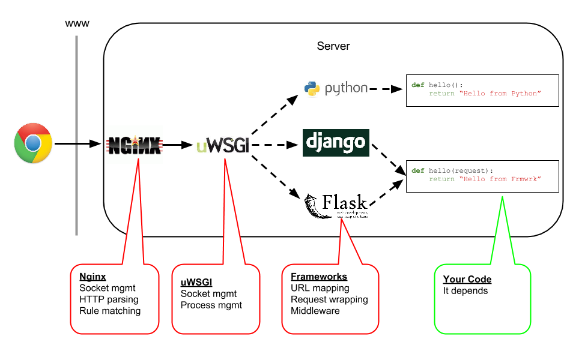

$ wrk -t 2 -c 20 -d 60 http://localhost/quote
| Thread Stats | Avg | Stdev | Max | +/- Stdev |
|---|---|---|---|---|
| Latency | 4.51ms | 20.56ms | 393.28ms | 98.89% |
| Req/Sec | 3.10k | 1.16k | 4.48k | 84.00% |
32354 requests in 1.00m, 8.43MB read
Requests/sec: 538.92
$ wrk -t 2 -c 20 -d 60 http://localhost/quote
| Thread Stats | Avg | Stdev | Max | +/- Stdev |
|---|---|---|---|---|
| Latency | 20.40ms | 108.92ms | 1.26s | 96.83% |
| Req/Sec | 2.51k | 1.00k | 3.49k | 83.06% |
32256 requests in 1.00m, 8.40MB read
Requests/sec: 536.85
$ wrk -t 2 -c 20 -d 60 http://localhost/quote
| Thread Stats | Avg | Stdev | Max | +/- Stdev |
|---|---|---|---|---|
| Latency | 5.45ms | 25.78ms | 468.96ms | 97.71% |
| Req/Sec | 2.64k | 1.71k | 4.81k | 60.00% |
32394 requests in 1.00m, 8.44MB
Requests/sec: 539.14

uwsgi_config_emperor.ymluwsgi:emperor: $(UWSGI_CONF)/backend_*.ymlvassals-include: %d/uwsgi_default.ymlvassal-set: wsgi-file=%d/run_api.pymaster: trueemperor-required-heartbeat: 90 # 90 sec tolerance for vassal's heartbeatsenable-threads: true
uwsgi_default.ymluwsgi:log-slow: 120000memory-report: trueworkers: 1callable: appheartbeat: 60 # send heartbeat to emperor every 60 secs
backend_8030.ymluwsgi:http: 0.0.0.0:8030
Когда император убивает вассала. "uWSGI worker 5 screams: UAAAAAAH my master disconnected: i will kill myself !!!"
При обнаружении нового вассала и обмена хелсчеками "announcing my loyalty to the Emperor... Mon Jul 17 20:51:59 2016 - [emperor] vassal www.ini is now loyal"
Brood lord - хозяин стаи
Это крупное летающее существо, похожее на ската, используется для воздушной осады. Хозяева стаи, участвующие только в крупных сражениях, способны выплевывать симбионтов, служащих живым оружием.
[uwsgi]socket = :3031master = truevassal-sos-backlog = 10module = werkzeug.testapp:test_appprocesses = 1zerg-server = /tmp/broodlord.sockdisable-logging = true
uwsgi --fastrouter 127.0.0.1:3017 --fastrouter-use-cache --cache 100 --file foobar.py
foobar.pyimport uwsgiuwsgi.cache_set("example.com:8000", "127.0.0.1:4040")uwsgi.cache_set("unbit.it", "127.0.0.1:5050")
uwsgi_router.yamluwsgi:-fastrouter: 127.0.0.1:3017-fastrouter-use-code-string: 0:megamapper.py:get